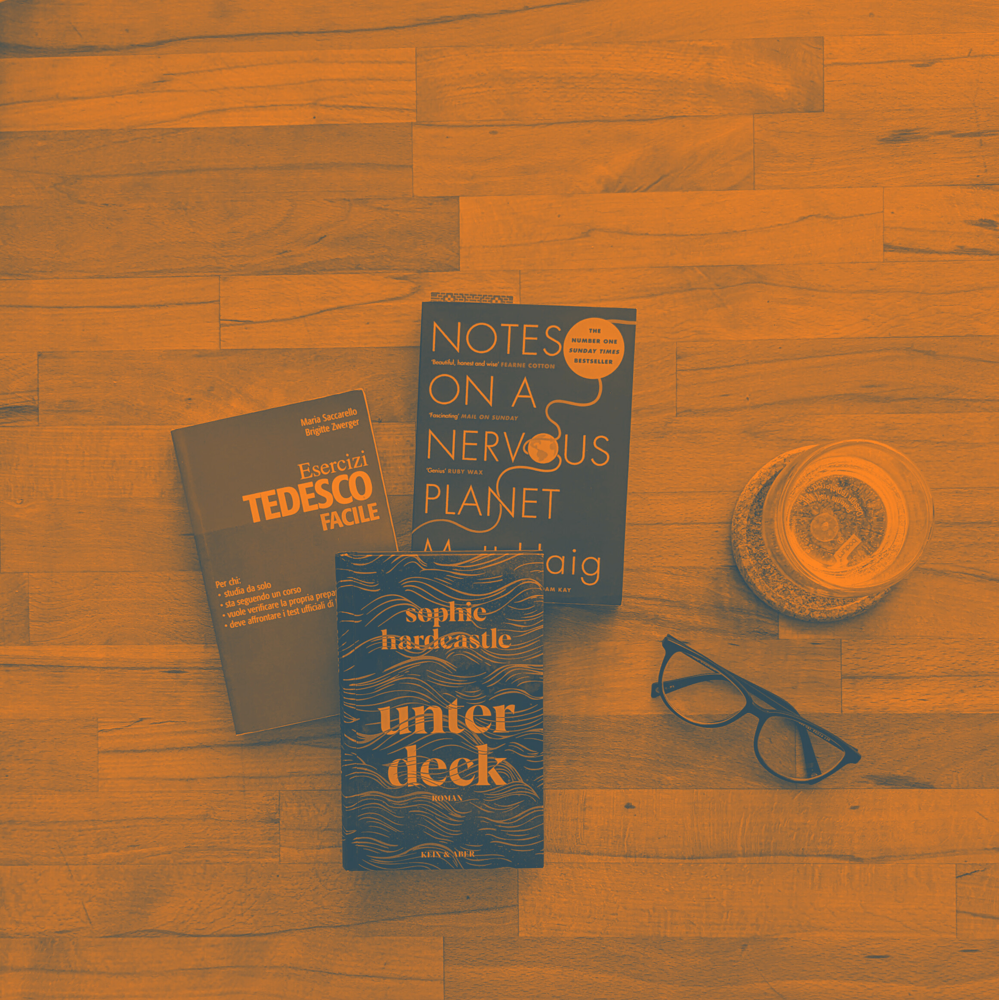

Il mio curriculum
Formazione
Percorso accademico
- Università degli studi di Padova - Laurea Magistrale in Lingue Moderne per la Comunicazione e la
Cooperazione Internazionale (L-38), 2017-2020
- Programma Erasmus+ presso la University of Leiden, gennaio 2019 - giugno 2019
- Università degli studi di Trento - Laurea Triennale in Lingue e Culture Moderne (L-11), 2014-2017
- Programma Erasmus+ presso la National University of Ireland, Galway (NUIG), settembre 2016 - maggio
2017
Corsi aggiuntivi
- start2impact University - Master in Full Stack Development, aprile 2023 - in corso
- Oblique Studio - Corso principe per redattori editoriali, ottobre 2022 - gennaio 2023
Certificati e competenze
Competenze linguistiche
- Inglese (C1). Certificato “Cambridge Assessment English - Certificate in Advanced English” (livello
C2),
2021.
- Spagnolo (B1)
- Tedesco (A2)
Competenze informatiche
- Linguaggi di programmazione: HTML e CSS
- Software di traduzione: CAT tools (SDL Trados, Smartcat e Matecat)
- Programmi di grafica e impaginazione: Quark Express, InDesign, Canva
- Content management: Wordpress
- Software e strumenti di produttività: MS Office, Google Workspace
Esperienze lavorative
- Università Eberhard Karl di Tubinga (Germania) - Assistente di ricerca presso il Dipartimento di
Studi Americani per il progetto “Populism and Conspiracy Theory (PACT)”, settembre 2022 - in corso
- Biblioteca civica “Villa Valle” (Valdagno, VI) - Servizio Civile Universale, 2021-2022
- Istituto Tecnico Tecnologico Economico “Galileo Galilei” (Arzignano, VI) - Docente supplente di
lingua inglese - marzo 2021
Attività di volontariato
- Attività di volontariato con Panisacco Accogliente, il gruppo di accoglienza di famiglie siriane
richiedenti asilo, 2018 - in corso
- Progetto European Solidarity Corps (ESC), febbraio 2020 - luglio 2021. Nel 2020, ho partecipato al
progetto ESC, finanziato dall’Unione Europea. Con il mio gruppo, abbiamo organizzato una serie di
eventi per sensibilizzare l’opinione pubblica sui temi sociali nel nostro comune.
- Membro attivo del gruppo giovanile “ValleY - Giovani di Valdagno”, 2019 - 2022